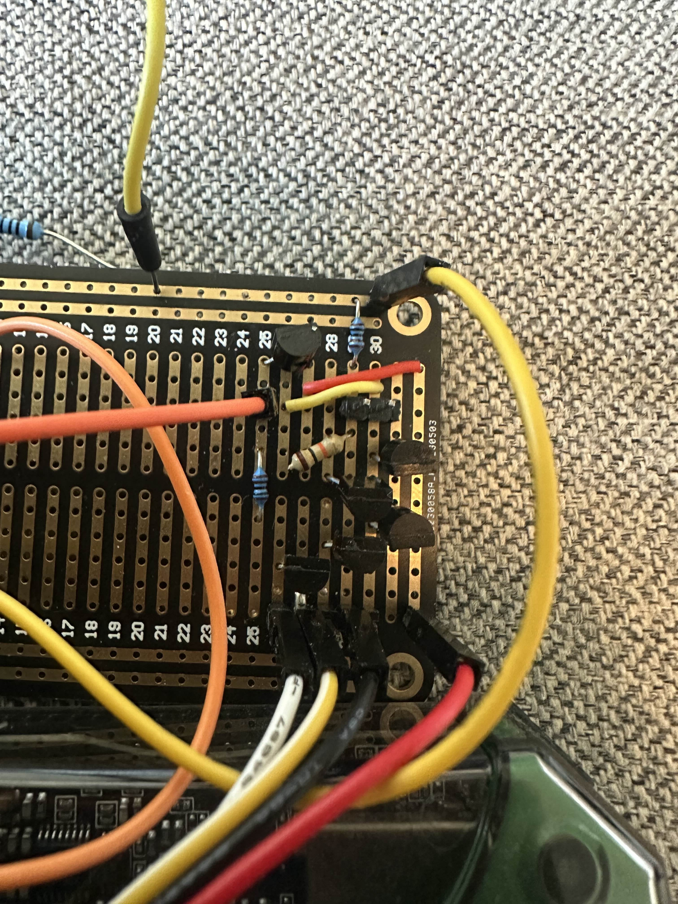

Å bygge en op-amp fra transistorer
En diskret operasjonsforsterker, satt sammen av en håndfull BC547 NPN-er og BC557 PNP-er på et koblingsbrett, forsynt med ±5 V, og deretter målt i åpen sløyfe, lukket sløyfe og under to forskjellige laster. Poenget var ikke så mye å bruke op-amp-en som å se den fra innsiden.

Arkitekturen
- Differensielt inngangspar (T3, T4): inngangene legges på basisen av et PNP-par; halestrømstransistoren (T5) setter arbeidspunktet.
- Strømspeil (T1, T2): gjør den differensielle strømmen om til et enkeltsidet signal.
- Emitterfølger på utgang (T6): lav utgangsimpedans, slik at op-amp-en faktisk kan drive en last.
- Forspenningsnettverk: R₁/R₂-spenningsdeler setter haletransistorens referanse. RS = 1 kΩ ved emitterfølgeren begrenser utgangsstrømmen.
Det jeg målte
1 kHz sinus, ±5 V forsyning, to laster (100 kΩ og 100 Ω), åpen sløyfe og med et inverterende tilbakekoblingsnettverk med forsterkning ×10:
| Konfig | RL | Vin | A | THDut |
|---|---|---|---|---|
| Åpen sløyfe | 100 kΩ | 1 mV | ~400 | 4,8 % |
| Åpen sløyfe | 100 Ω | 3 mV | ~100 | 1,7 % |
| ×10 tilbakekobling | 100 Ω | 50 mV | 9,2 | 0,27 % |
| ×10 tilbakekobling | 100 kΩ | 50 mV | 9,7 | 0,22 % |
Åpen-sløyfe-forsterkningen stuper med en faktor på fire når lasten går fra 100 kΩ til 100 Ω. Det diskrete utgangstrinnet klarer ikke å henge med. I lukket sløyfe, med forsterkningen låst til 10 av tilbakekoblingsnettverket, lander begge lastene innenfor et par prosent av målet, og THD faller en størrelsesorden. Tilbakekobling gjør akkurat det læreboken sier, på ekte maskinvare.


Det jeg tok med meg
At det å se lukket-sløyfe-tilbakekobling overstyre komponentvariasjon med egne øyne er mer overbevisende enn et hvilket som helst antall lærebokfigurer. Spennet 9,2 → 9,7 mellom lastene, og 9,2 → 10,7-svingningen jeg fikk da jeg byttet én tilbakekoblingsmotstand med en nominelt identisk del, argumenterte for negativ tilbakekobling bedre enn noen forelesning.